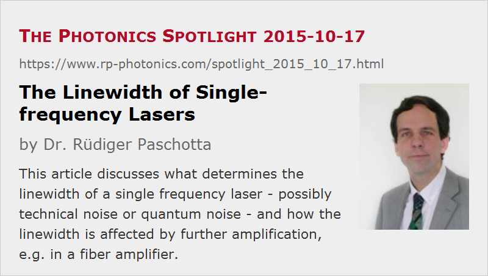

The Linewidth of Single-frequency Lasers
Posted on 2015-10-17 as a part of the Photonics Spotlight (available as e-mail newsletter!)
Permanent link: https://www.rp-photonics.com/spotlight_2015_10_17.html
Author: Dr. Rüdiger Paschotta, RP Photonics Consulting GmbH
Abstract: This article discusses what determines the linewidth of a single frequency laser - possibly technical noise or quantum noise - and how the linewidth is affected by further amplification, e.g. in a fiber amplifier.

Ref.: encyclopedia articles on single-frequency lasers, phase noise, linewidth, Schawlow–Townes linewidth
Single-frequency lasers are lasers operating on a single resonator mode. This does not mean that the electric field oscillates according to a perfect sinusoidal wave with absolutely constant instantaneous frequency; there is always some phase noise which leads to a finite optical linewidth.
In this article, I discuss some facts in this context which are important but often misunderstood.
What Phenomenon Determines the Laser Linewidth?
If a laser would not be subject to any technical noise – i.e., to noise sources which could in principle be eliminated –, that would still be some level of phase noise resulting from quantum noise. That leads to a quantum-limited linewidth, which I discuss further below. That linewidth can be extremely small – for solid-state lasers easily far below 1 Hz. However, it is often very difficult to push technical noise sources so far down that the quantum-limited linewidth can be observed. In particular, one is often dealing with acoustical and thermal vibrations.
Semiconductor lasers (mostly laser diodes) usually have a very compact and robust setup, which is not very sensitive to technical noise influences. However, they tend to have a fairly high quantum-limited noise. This is partially due to their substantial round-trip losses in combination with a very short resonator (see below), and the noise level is substantially increased further by a coupling of amplitude to phase noise due to the dependence of the refractive index on the carrier density in the semiconductor. That coupling is quantified with the so-called linewidth enhancement factor α.
Of course, when minimizing the linewidth of a laser one should know which effects are really the limiting ones, so that one can concentrate on those measures which have a chance to improve the situation.
The Quantum Limit
The quantum-limited linewidth is given by the famous Schawlow–Townes equation. From that, one can learn a couple of interesting relations:
- If we assume for simplicity that the round-trip loss of the resonator is caused only by the output coupler transmission, the linewidth is proportional to the square of the optical power loss per resonator round trip. This is essentially because both the optical losses and the laser gain required for compensating these losses introduce quantum noise, which affects the optical phase of the circulating electromagnetic wave.
- Also, the linewidth is inversely proportional to the square of the round-trip time of the resonator. The shorter the resonator, the more often per second the mentioned quantum noise can contaminate the circulating wave. Therefore, one may try to make the laser resonator as long as possible. That, however, leads to a setup which is tentatively more subject to technical noise. Also, it can be more difficult to obtain stable single-frequency operation.
- The linewidth is also inversely proportional to the optical power; a strong circulating field is less strongly affected (in terms of phase changes) than a week field.
Effect of Subsequent Amplification
Many believe that the linewidth must be increased if one amplifies the output of a single-frequency laser in some kind of optical amplifier, e.g. a fiber amplifier. After all, such an amplifier usually exhibits much more gain than used in the laser, so that one may expect to get much more quantum noise introduced there. This is wrong, however; in fact, the optical linewidth is usually not at all increased in an optical amplifier.
In order to understand this, one should recall that a finite linewidth is related to an unbounded random walk of the optical phase: as more and more time passes, phase errors in a laser resonator can grow without any limit. (In simple cases, the standard deviation of the phase error grows in proportion to the square root of the passed time.) An optical amplifier will now contribute phase errors, but the added phase error will stay within certain limits: the optical field passes the amplifier only once (or some limited number of times), the temperature of the device always stays within certain limits, etc. Therefore, the long-term drift of the optical phase is not increased by the amplifier. The optical spectrum consists of a narrow line sitting on some noise background; usually, the amplifier somewhat raises that noise background while leaving the full width at half maximum (measured at a much higher level) more or less unchanged.
It is instructive to consider the amplification of the signal with zero linewidth. That is not a purely theoretical imagination; the linewidth of an oscillator can be exactly zero if it is locked to some frequency reference and the phase noise is understood to be relative to that reference. (See also The Photonics Spotlight 2008-07-26.) The optical spectrum is then a delta peak (see the Dirac delta function) sitting on some noise background. The effect of a noisy amplifier is then to raise the level of the mentioned noise background, but the Delta peak is preserved, i.e., the width of that peak remains exactly zero.
This article is a posting of the Photonics Spotlight, authored by Dr. Rüdiger Paschotta. You may link to this page and cite it, because its location is permanent. See also the RP Photonics Encyclopedia.
Note that you can also receive the articles in the form of a newsletter or with an RSS feed.
Questions and Comments from Users
Here you can submit questions and comments. As far as they get accepted by the author, they will appear above this paragraph together with the author’s answer. The author will decide on acceptance based on certain criteria. Essentially, the issue must be of sufficiently broad interest.
Please do not enter personal data here; we would otherwise delete it soon. (See also our privacy declaration.) If you wish to receive personal feedback or consultancy from the author, please contact him e.g. via e-mail.
By submitting the information, you give your consent to the potential publication of your inputs on our website according to our rules. (If you later retract your consent, we will delete those inputs.) As your inputs are first reviewed by the author, they may be published with some delay.
|  |
If you like this page, please share the link with your friends and colleagues, e.g. via social media:
These sharing buttons are implemented in a privacy-friendly way!